Analyse des données
Comment donc détecter des faux billets ?
Un billet possède plusieurs caractéristiques, comme par exemple:
-Couleurs
-Poids
-Dimensions
Les dimensions sont des caractéristiques précises, elles rendent donc les résultats fiables.
Pour bien comprendre la présentation qui va suivre il faut dans un premier temps être au clair avec les "Box Plot".
Un Box Plot est un support visuel permettant de résumer une variable intuitivement. La plage de l'échelle horizontale s'étend du minimum au maximum pour la variable sélectionnée.
La valeur centrale, la médiane, séparent les données en quantités égales (il existe autant de valeur supérieures qu'inférieures à cette valeur dans l'échantillon).
Les bords du rectangle sont les quartiles . Par exemple pour le bord inférieur, 25% des observations ont des valeurs plus petites et 75% ont des valeurs plus grandes.
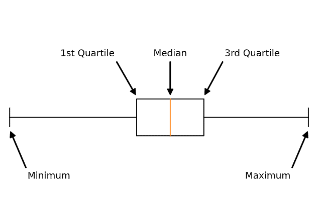1st Quartile = 25%
Median = 50%
3rd Quartile = 75%
Diagonal


La distribution de la mesure DIAGONAL est assez homogène entre les FAUX et les VRAI.
Height Left
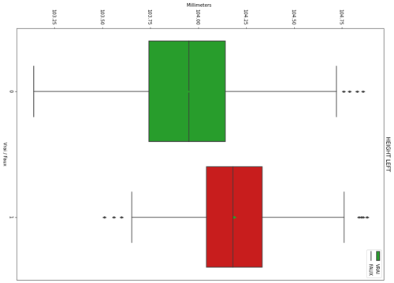 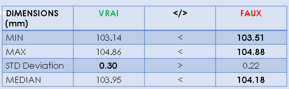La distribution de la mesure HEIGHT LEFT chez les FAUX est très proche des VRAI.
La distribution des FAUX est plus tassé que chez les VRAI.
Les FAUX peuvent se cacher chez les VRAI.
Height Right
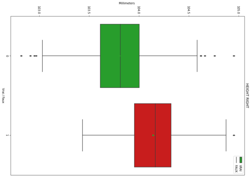 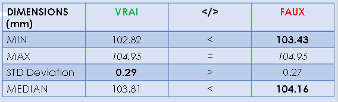La distribution de la mesure HEIGHT RIGHT chez les FAUX est très proche des VRAI.
La distribution des FAUX est plus tassé que chez les VRAI.
Les FAUX peuvent se cacher chez les VRAI.
Margin Low
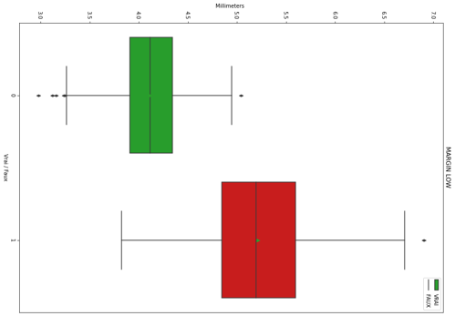 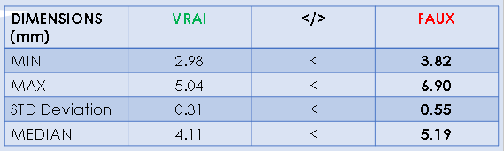La dimension de la mesure MARGIN LOW chez les VRAI est beaucoup tassée que chez les FAUX.
Margin Up
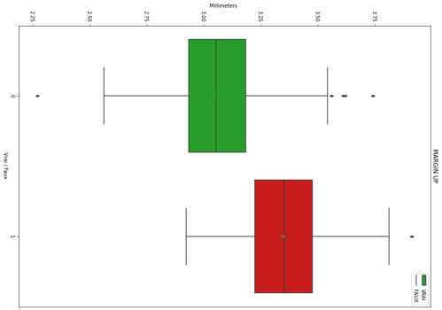 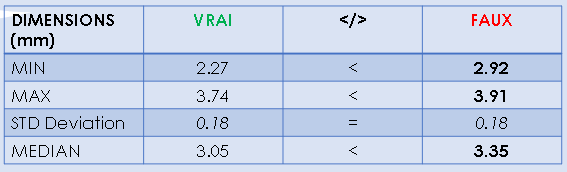La distribution de la mesure MARGIN UP chez les FAUX est légèrement moins volatile que chez les VRAI.
Length
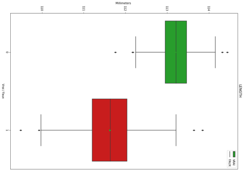 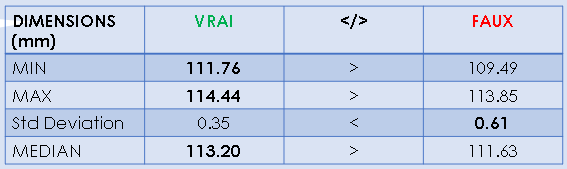La distribution de la mesure LENGTH est plus étalée chez les FAUX que chez les VRAI dimensions.
Conclusion
L’analyse précédente montre que les dimensions LENGTH et MARGIN LOW sont celles qui trahissent le plus les FAUX billets.
Étant dans l’ordre du millimètre, seule une machine peut repérer ces différences infimes.
D’où la nécessité d’un modèle informatique.